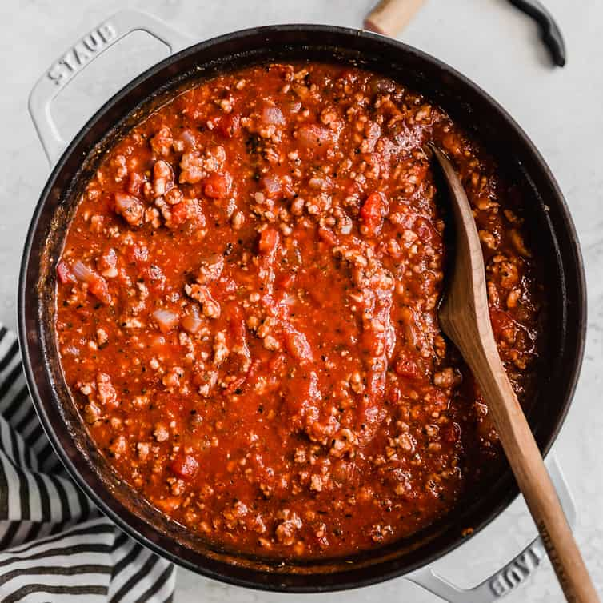

Vegan Meat Sauce

A Meatless Meat Sauce (...wat)
This Meat Sauce has NO MEAT! That's Right! So even your hipster homies can enjoy it!
WHAT YOU NEED, YO!
- 1 yellow onion, rough chopped
- 1 carrot, rough chopped
- 1 stalk celery, rough chopped
- 1 tablespoon neutral oil (I use Avocado Oil)
- 1 pound of BEYOND MEAT (or Impossible. Whatever you can get your hands on. Doesn't matter if it's from the freezer section as long as it can crumble)
- 2 cloves garlic, minced
- 1/2 cup dry white whine or dry vermouth
- 1 - 15oz can of crushed tomatoes
- 3 tablespoons tomato paste
- 2 cups VEGAN beef broth (oh yes, it's a thing. Look it up!)
- 1 bay leaf
- 3 tablespoons balsamic vinegar
- 1 1/2 cups of Almond Milk
- 1 1/2 teaspoons kosher salt
- 1 teaspoon Oregano
- 1 teaspoon red pepper flakes (for a lil kick. Use less if you'd like)
- 1/2 teaspoon freshly ground black pepper
WHAT YOU DO, YO!
- Put onion, carrot & celery into a processor, and pulse until finely minced
- Heat oil in a large pot over medium-high heat, heat oil and add the vegetables - cook until soft, about 5 minutes
- Put in garlic and cook until fragrant, about a minute then add your "meat" of choice, getting a little bit of color and breaking it up as you go
- Add wine (or vermout) and bring mixture to a simmer, and cook until wine is mostly reduced
- Stir in tomatoes, tomato paste, "beef" stock, bay leaf, oregano, pepper flakes and balsamic vinegar - mix well, reduce heat and simmer for about an hour
- Remove the bay leaf and add milk - stir well, bring to a simmer stirring occasionally, about 45 minutes
- Season with salt and pepper and serve...or elope, leave behind your frineds and family, and live forever in the mountains of Italy